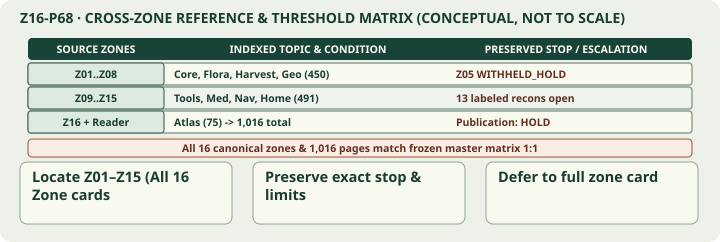

Z16-P68 · Field reference atlas · New manuscript
Master Sixteen-Zone Architecture and Standalone Zone-Reader Map
Map all 16 canonical zones (1,016 pages), standalone zone readers, consolidated directory, and tagged Letter, A4 proofs for offline navigation.
When it applies · Orienting readers, auditors, and print reviewers across the complete offline edition.
Equipment · Full offline reader (Z01–Z15 (All 16 Zones)), primary zone cards, and local emergency and agency references.

Actions
- Navigate all 16 completed draft zones matching the frozen master scope exactly: Z01 Fundamentals (22), Z02 Shelter (55), Z03 Fire (45), Z04 Water (55), Z05 Wild Foods & Lookalikes (135), Z06 Hunting & Fishing (48), Z07 Traps & Snares (30), Z08 Rocks & Materials (60).[A10]
- Navigate zones Z09–Z16: Z09 Tools & Construction (53), Z10 Wilderness Medicine (80), Z11 Navigation, Weather, Rescue (68 incl. 10 reconstructions), Z12 Extreme Environments (75), Z13 Home Utilities (70 incl. Z13-R03), Z14 Food Preservation (80 incl. Z14-R01), Z15 Disasters (65 incl. Z15-R03), Z16 Field Reference Atlas (75) = 1,016 total pages.[A10]
- Use reader, index.html for instant offline full-text search, each standalone zone reader under reader, zones, reader, directory.html for the 16-zone status table plus untouched Track B history files, and the proofs folder for tagged Letter and A4 PDFs.[A10]
Failure recognition · Searching only one zone misses critical cross-zone safety bounds such as CO clearance (Z02, Z03, Z13) or water, well limits (Z04, Z13).[A10]
Verify · All 16 zone allocations sum to 1,016 pages and match frozen the frozen master ZONE_COMPLETION_MATRIX 1:1.[A10]
Stop or change course · Stop assuming draft completion equals publication approval; every reader page carries an explicit HOLD banner.[A10]
Evidence and editorial notes
- A10 · FEMA / Ready.gov · Make a Plan (current web edition)
- Section: Offline reader navigation, historical lineage, and HOLD transparency · Conditions: Using the complete 16-zone offline archive, zone readers, and print proofs
Support: Navigation aids expose draft status, reconstruction lineage, open diagnostic photo needs, and pending specialist holds on every lookup path.
Limitations: Automated validation checks structure and citations only; publication remains HOLD until qualified human review completes. · Conflicting evidence: None noted.
Editorial note: Anchors Z16 offline navigation & governance index. · Specialist reviewer: Accessibility, print QA, and editorial reviewer
Primary source · checked 2026-11-24
Source lineage · New manuscript (Z16 P20 offline navigation) · Classification · New manuscript.